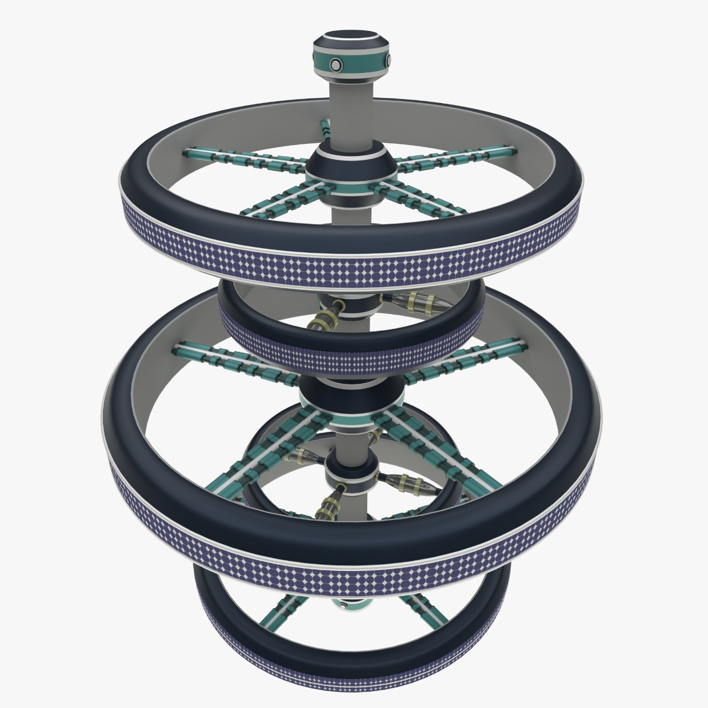
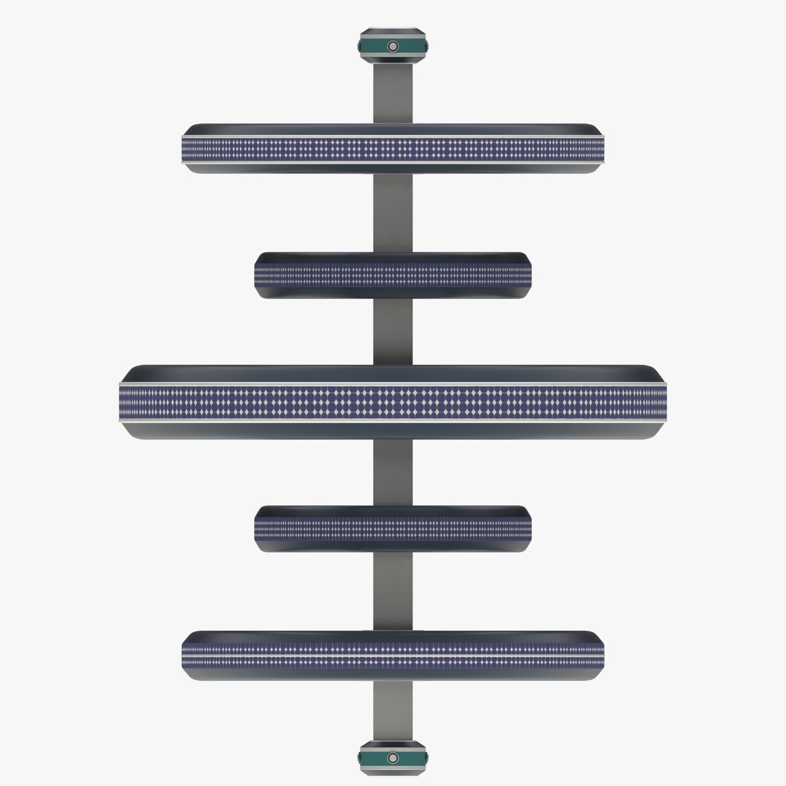
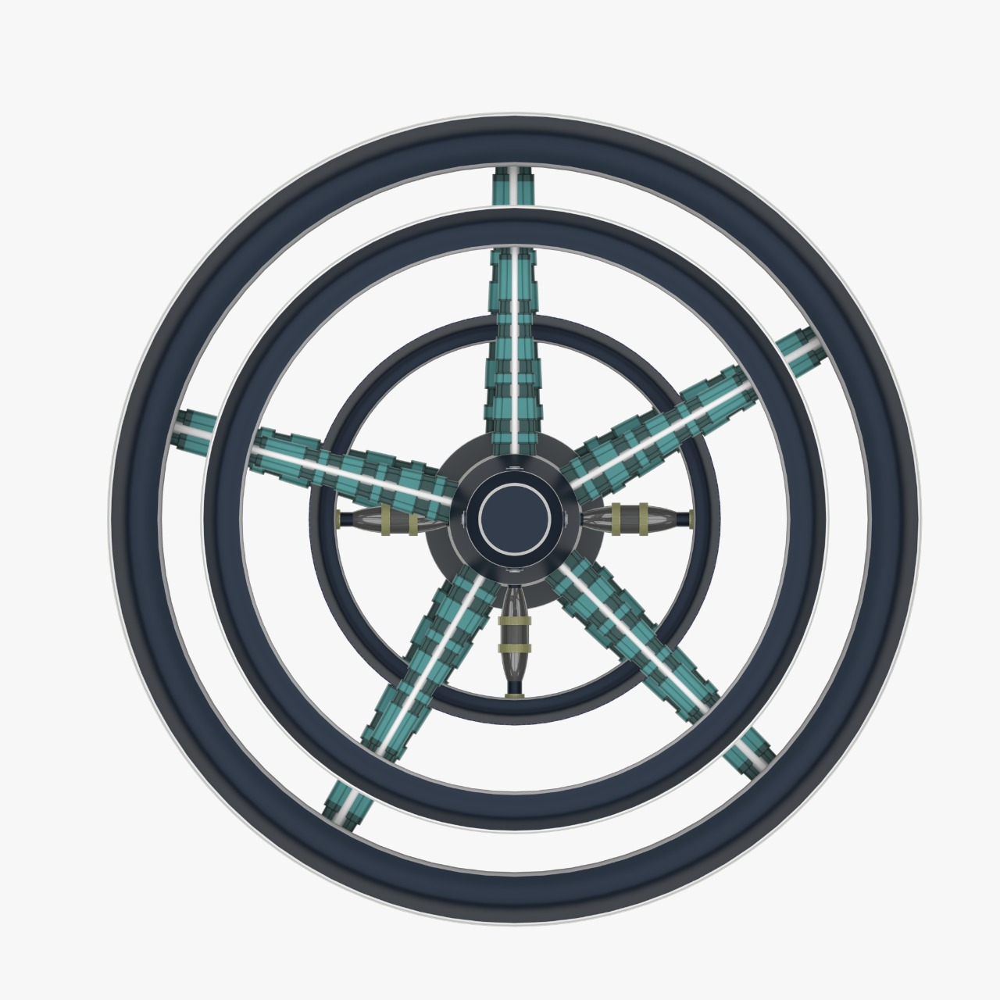
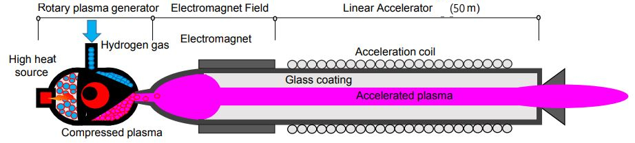
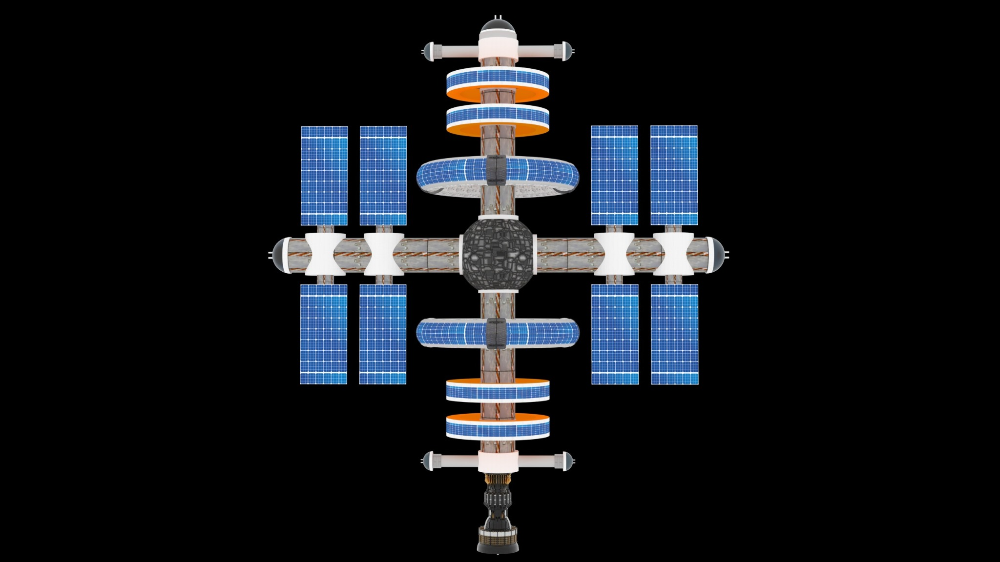
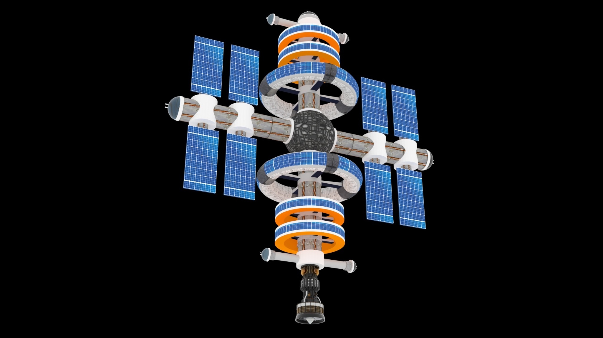

PROJECTS / 03
CONCEPTS & SYSTEMS
Space-settlement concepts developed through independent exploration.
PROJECT 01 / 2023
GRIM-1
A conceptual space-colony project developed for participation in the NSS Gerard K. O'Neill Space Settlement Contest in 2023.



Contest participation concept; presented as a design proposal, not an operational space colony.
PROJECT 02 / 2024
VULCAN
A second conceptual space-settlement project developed for participation in the NSS Gerard K. O'Neill Space Settlement Contest in 2024. The project includes the Accelerated Plasma Propulsion System (APPS), an original propulsion concept developed as part of the wider VULCAN work.
FEATURED SYSTEM / APPS
Accelerated Plasma
Propulsion System
A propulsion concept developed as part of the VULCAN project.



Contest participation concept. APPS is presented as a conceptual system within the project.